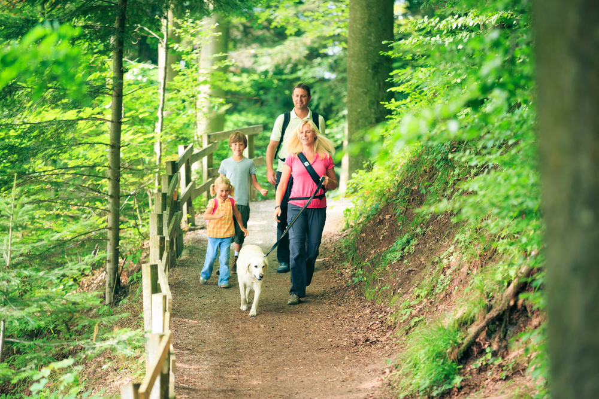

Bildbeschreibung auf Deutsch (Niveau B1)
توضیحات تصویر به زبان آلمانی (سطح B1)
سوال زیر را برای چتجیپیتی مینویسم:
لطفاً یک توصیف از یک تصویر بده که یک خانواده همراه با سگشان به سفر رفتهاند، به زبان آلمانی برای سطح:
(B1)
همچنین لطفاً یک تصویر هم ارائه بده، و بعد تمام جملات را به زبان دری توضیح بده.
میخواهم هر جملهٔ آلمانی با ترجمهاش به دری دنبال شود.
سپس او پاسخ میدهد:

Beschreibung:
Eine Familie mit zwei Kindern und einem Hund wandert gemeinsam durch einen bewaldeten Weg.
یک خانواده با دو کودک و یک سگ با هم در یک مسیر جنگلی قدم میزنند.
Die Eltern tragen Rucksäcke, die Kinder feste Schuhe.
والدین بکسهای پشت دارند و کودکان کفشهای محکم پوشیدهاند.
Der Hund läuft vorneweg – es scheint ein mittlerer bis großer Vierbeiner zu sein.
سگ در جلو حرکت میکند – به نظر میرسد یک سگ متوسط تا بزرگ باشد.
Die Stimmung ist fröhlich und entspannt.
فضا شاد و آرام است.
Im Hintergrund sieht man hohe Bäume und ein leicht hügeliges Gelände.
در پسزمینه درختان بلند و زمین کمی پُشتهدار دیده میشود.
Das Wetter ist mild, vermutlich Frühling oder Herbst, denn die Kleidung ist weder sehr warm noch sehr luftig.
هوا ملایم است، احتمالاً بهار یا خزان، چون لباسها نه خیلی گرماند و نه خیلی نازک.
Weitere Details:
Die Kinder lachen und schauen sich gegenseitig an.
کودکان میخندند و به همدیگر نگاه میکنند.
Die Eltern beobachten aufmerksam die Umgebung, vielleicht entdecken sie etwas Interessantes.
والدین با دقت به اطراف نگاه میکنند، شاید چیزی جالب پیدا کنند.
Der Hund ist ruhig, aber neugierig – er schnuppert am Boden.
سگ آرام است اما کنجکاو – او زمین را بو میکشد.
Alles wirkt harmonisch: Familie, Natur und Hund genießen den gemeinsamen Spaziergang.
همه چیز هماهنگ به نظر میرسد: خانواده، طبیعت و سگ از گردش مشترک لذت میبرند.